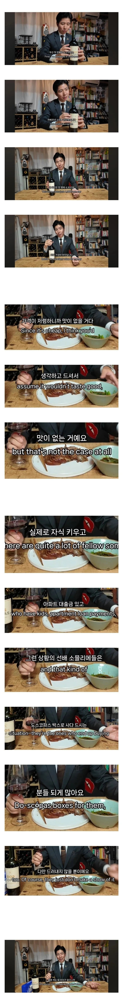

소믈리에의 업계 비밀 폭로.
댓글
음향기기랑 같다는 거네 ㅋㅋ 중저가 라인 넘어가면 걍 감성가격인 거지 뭐
일단 조니워커 블랙을 마셔
나는 바로사 잉크 쉬라즈가 딥하고 맛있더라
이런면에서 조니워커 블랙 그린이 짱인듯
지금은 저렴한 버번 잘 마시는데, 아버지 로얄샬루 38년산 뽀려먹었을 때 그 맛이 잊히지가 않는다
ㅁㅊ 150만원이네
걍 까베네쇼비뇽 자체가 최고임
뭘 먹어도 다 평타이상이고 한잔 이후부터는 어짜피 맛 구분 못한다고 보면 됨
비싼거나 싼거나 오픈 후 시간 지날수록 달라지는데 뭔 한 잔 이후부터 구분을 못함
한잔 넘으면 취하나봐
난 쉬라가 맛있어
쉬야도 맛있는 청년
까베르네소비뇽은 너무 쎄서 범용으로 먹기는 좀....
말벡도 괜찮은데
맛은 다 개인적인거고 아는만큼 보이고 아는만큼 들리고 아는만큼 느끼는거지. 솔직히 와인판이나 위스키판이나 99%가 자기 줏대없이 이리저리 쓸려다니는데 뭐
맛 없는 것들 비싸게 파는게 문제
술은 안 좋아해서 잘 모르지만 커피 쪽은 가향 커피라고 논란이 있음
아니 그래도 도스파코스는 맛 없어...
디아블로랑 비교해서 어떤거같음?
나는 디아블로 농도는 좀 밍밍한데 맛있게 마심
디아블로 훌륭한 와인이지. 칠레 만원 짜리들 가성비 지림. 1887도 가성비 좋고
도스 코파스
칠레 산티아고 마트에서 산 4천원짜리 까베르네 소비뇽이 웬만한 와인들보다 훨 나음
루마니아 클루지나포카 마트에서 산 3~4천원짜리도 마찬가지임
사람들이 방에 모여 인당 두병씩까고 헤어지곤 했음
이것저것 먹어봐도 디아블로 카베네쇼비뇽 편의점 세일할때 사서 쟁여두고 마시는게 제일 입에 맞더라.
와인킹 아조씨가 지역, 품종 맛 다 잘느껴지는 아주 잘만든 와인이라 해쏘
디아블로 좋지.
코노 수르 비씨클레타도 괜찮아.
도스코파스 G7 둘다 오잉? 소리 나올정도로 맛이 괜찮다
와인은 진짜 모르겠던데
어쩌다가 비싼 와인 하나 생겨서 더글로리에 나오는 방법으로 마셔보니까
그래도 모르겠더라...
포도주스보다 맛있다고?
그 진한 포도주스보다?
그곤 포도향 설탕물이잖아…
저 까베르네 소비뇽이 와인 입문하려는 뉴비들 죄다 조져버리는데
매번 와인하면 얼핏이라도 들어보게만드니까
저걸로 첨 마셔보고 다 떨어져나가게해서 별로
구린와인에 콜라타면 상당히 좋다던데
스페인 애들이 비슷하게 해먹음 구린 와인에 탄산수 타 먹기, 콜라 타먹기
와인은 종류가 넘많아서 어려워
난 와인은 콩고드가 제일 좋았어 저렴하고 달달하니.. 와인 좋아하는 사람들은 포도주스에 알콜 섞은거라 뭐라하겠지만 ㅋㅋ 20대때 여친이랑 펜션가면 달다고 잘마시고 술취해버림 술도 잘 못하는 사람이
내가 아깝지않게 지불할 수 있는 마지노선은 보졸레누보였음. 일단 싼데 맛도 보~통 나쁘지않아서
걍 조또 몰라서 그런가 모스카토 2만원짜리 달달한게 맛있음
모스카토 포트 아이스 와인만 먹음
달달한게 최고야
소장을 불러라
나 비염인이라
비싼거 마셔도 향을 잘 못 느껴서....
인생 개손해보고 있음
어릴땐 라면 하나 끓여도 집안에 진동하는 라면냄새를 맡고 좋아했는데
이제 코박고 먹어도 라면향이 진하지 않음
느껴는 지는데....
흑흑.... ㅠㅠㅠ양주 와인 다 제대로 못 즐기니
걍 사케나 백주로 넘어갔음
그래도 이건 입에서 구분도 가능하고 맛있어가
맛없다고 해봐야 고작 0.12~0.14배..
상당히 크네요…
나는 아직도 와인맛을 잘모름.
이거 얘기하니까 하나같이 자세히 느껴보면 차이가 있다 이러는데
그말 한 애들이 주로 허언이나 사회적인 쌘척? 이런거 하는애들이라 신용도 안되고 못믿겠음
나 홈플러스에서 산 1897인가 5만원 좀 안했던거 같은데 이게 진짜 맛있더라고
좀 더주고 커클랜드 와인 마시면 좋음 1.1~1.5
쉬라즈 좋아하면 쿠능가힐 시리즈 1~2.5
와알못이라서 모스카토 다스티나 먹을게요
오우
이게 옛날에 친구가 추천해준거긴하네